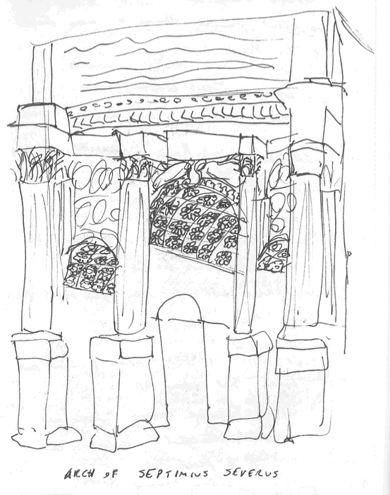
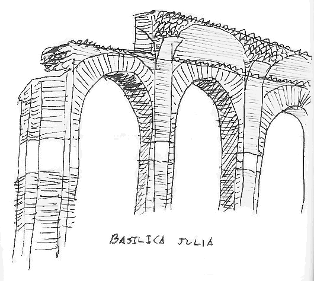
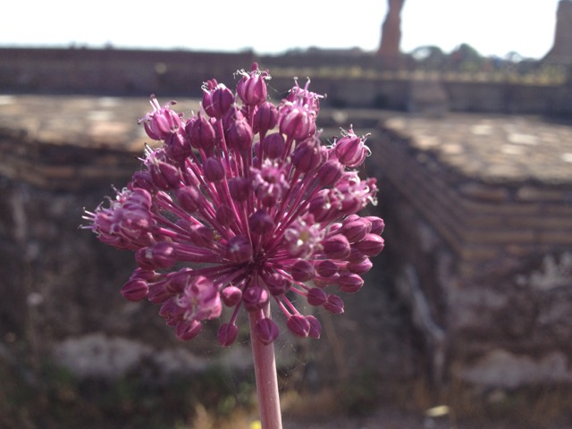

The geography of Rome centers around seven hills, around which the Tiber river winds. It could be argued that the two most important of these hills are the Palatine hill, on which the emperor's palace was located, and the Capitoline hill, where the city's Capitolium or, temple to Jupiter, Juno, and Minerva, was built. The Roman Forum can be found nestled between five of Rome's hills, namely the Capitoline, Palatine, Quirinal, Viminal, and Esquiline hills. The forum itself is an extremely important place not only for its function as a social and political space in the city but also for the axis it creates from the Capitolium through the Forum to the Colosseum. Visitors to the Capitolium could get there via a road known as the Sacred Way, which would pass through the forum and wind its way up the Capitoline hill.
Roman Forum
The Roman Forum was an extremely important place to the daily life of Roman citizens. Trade, social life, parades, legal decisions and lawmaking all happened in the forum. There are dedicated spaces within the forum for all of these activities. The Comitium was an open space for political discussions with a raised platform called a Rostra placed in the middle for the speakers to stand on. Originally a round space, the Comitium was reconstructed by Julius Caesar in rectilinear form. There is also the Curia, a senate building, and the Tabularium, which acted as the state archives and treasury.
The Temple of Saturn - a hexastyle ionic temple dating to the end of the 6th century BC located at the end of the forum that is up against the Capitoline hill. Saturn was the Roman god of the harvest and planting.
The Arch of Septimius Severus is a triumphal arch celebrating two victories against the Parthians. Constructed in the third century AD. The arch features semi-engaged columns, where the base and capital of the column are attached to the structure while the shaft stands free.
The Arch of Septiumius Severus

Sketch of the Arch of Septimius Severus
The Basilica Giulia, a building which housed legal functions. Rather than columns, the building was constructed on piers made of brick and concrete. The Basilica Giulia is across the forum from the Basilica Aemilia, a multi-story building that was a commercial space. In this image, an arch from the Basilica Giulia frames columns from the Temple of Castor and Pollux.

Sketch of arches from the Basilica Giulia
The Temple of Castor and Pollux, twin horsemen who had a vision that brought their army to victory.
A temple that has been converted into a church, with a church facade constructed behind the prostyle of the temple.
As I took in the Roman Forum, I found it to have a similar function to the Athenian Agora. Both are public spaces where political decisions were made and people would socialize. Parades would go through both the Agora and the Forum in their respective cities, and there are indubitably other ways that these two locations were central to the daily life of Athenians and Romans. Laura mentioned that the main difference between the Forum and the Agora was the fact that Gladiatorial matches would take place in the forum. I can see several more differences between the two spaces. First, the two differ in their planning. The Forum is laid out to be as linear as the landscape will allow; the main road through the forum is perpendicular to the side roads that turn immediately off it. In contrast, the main path through the Agora is a diagonal, perpendicular to none of the roads it crosses. The layout of the Agora is much more organic. Second, commerce was a bigger part of the Forum than of the Agora. There would have been many shops along the Sacred Way in the Forum, while street vendors were not allowed on the main diagonal of the Agora at all. A third way the two differ is the way political decisions were made in the two places. Greek democracy took place in the Agora, meaning everything was put to a vote. In the Roman Forum, political decisions were made based on existing Roman Law. Finally, the Agora would have been more open to the air than the Forum. Part of the philosophy behind Greek democracy was that government should not take place behind closed doors, and spaces for court cases and lawmaking were created outdoors in the Agora for this reason. On the other hand, the Forum housed many buildings that were used as courts and other legal spaces.
The Imperial Palace
The Palatine hill was the location of the Imperial Palace where every Roman Emperor from Domitian until Constantine resided. Prior to the construction of the palace, Augustus also lived on the Palatine hill, though in a more humble dwelling. Augustus chose to make this hill a sacred place in order to honor Romulus, who is thought to have lived on the hill in clay huts at the founding of the city.
The Imperial Palace
The Imperial Palace
A courtyard water feature at the Imperial Palace
The Paletine Stadium, which was functionally a garden used for exercising horses.
Palatine huts, linked with the founding of Rome and potentially the place where Romulus lived.

Purple flower in the Milkweed family.
I can appreciate Augustus for being a humble and charismatic emperor, or at least appearing to be so. Augustus wanted to make sure he respected the history of Rome, so he provided political protection to the Palatine hill because of its significance to the city. He chose to live in a smaller dwelling rather than in a huge palace taking up land and resources from the city. He also was able to bring about the beginning of the Pax Romana. Learning about the choices made by Augustus and the life he decided to live as emperor helps to make his personality seem more real. It is easier to observe the personalities of current politicians from seeing them on television, watching how they react to different situations, and hearing them engage in debates with each other. Being able to witness these people in real life or through a video camera reveals not only their political stances but also highlights sources of friction between them. Based on what I know about Augustus without being able to directly observe him, I can imagine that if Roman Emperors were in the eye of the public in the same way that public figures are in the present day, Augustus would handle the delicate presentation of his public image very well.